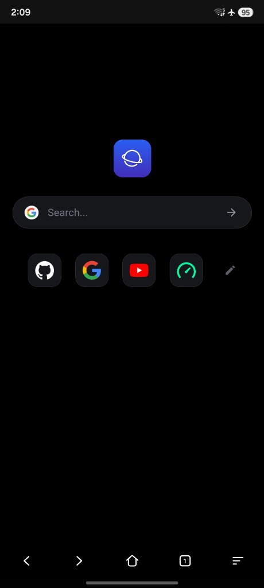
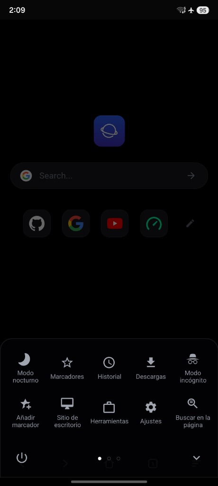

El navegador más ligero, rápido y limpio para Android
Diseñado para quienes buscan la máxima velocidad sin renunciar al control. Con apenas ~3 MB, arranque instantáneo, interfaz ergonómica inspirada en Via Browser y un bloqueador uBlock integrado que defiende tu privacidad sin consumir batería.

Diseñada para el uso natural con una sola mano. Sin noticias molestas, sin barras abarrotadas: solo tú y la web.
Buscador integrado con autocompletado rápido, accesos directos configurables y navegación inferior al alcance de tu pulgar.

Todas las herramientas esenciales en una sola hoja deslizable: Modo nocturno, Marcadores, Incógnito, Modo escritorio y Descargas.
Reproduce contenido en YouTube y navega sitios complejos sin interrupciones publicitarias, banners ni rastreadores de fondo.
Cada detalle ha sido optimizado meticulosamente para ofrecer una navegación ágil, privada y confortable.
Ocupa una fracción minúscula de almacenamiento comparado con navegadores monstruosos de 150 MB+. Ideal para cualquier dispositivo.
Arranque instantáneo en frío y consumo de memoria RAM reducido a su mínima expresión. Cero servicios fantasma drenando batería.
Filtra en memoria con listas avanzadas anti-anuncios, popups y scripts de seguimiento. Ahorra hasta un 60% de tus datos móviles.
Barra inferior inteligente y menú contextual adaptado al uso natural con una sola mano, sin tener que estirar el dedo a la parte superior.
Cero telemetría, cero registros analíticos y cero rastreo comercial. Tus consultas e historial te pertenecen exclusivamente a ti.
Sincronización automática con el modo oscuro del sistema Android o conmutación manual rápida para proteger tus ojos de noche.
Limpia páginas y artículos para una lectura fluida sin distracciones, o solicita versiones de ordenador con un solo toque.
Transiciones suaves, gestor de descargas integrado y administración rápida de pestañas múltiples sin ralentizaciones.
Los navegadores tradicionales se han vuelto lentos y cargados de funciones innecesarias. Compara y nota la diferencia:
| Característica | lw Browser | Google Chrome | Otros Navegadores |
|---|---|---|---|
| 📦 Tamaño de la aplicación | ✓ ~3 MB | ✕ 180 MB - 300 MB | ~ 80 MB - 150 MB |
| 🛡️ Bloqueo de anuncios nativo | ✓ Integrado (uBlock) | ✕ Sin bloqueo (Sin extensiones) | Básico / Limitado |
| 🔒 Telemetría y Rastreo | ✓ Cero telemetría | ✕ Perfilado intensivo | Analíticas de uso |
| ⚡ Consumo de Memoria RAM | ✓ Mínimo (~35-60 MB) | ✕ Muy alto (400-800 MB) | Moderado (250-500 MB) |
| 📱 Ergonomía a una mano (Barra inferior) | ✓ Inspirado en Via | ✕ Barra superior forzada | Variable / No optimizado |
| 🔋 Impacto en la batería | ✓ Casi imperceptible | ✕ Alto consumo de fondo | Moderado |
| 📜 Licencia de Software | ✓ MPL-2.0 Open Source | ✕ Propietario cerrado | Mayormente cerrado |
Disfruta de páginas web que cargan hasta 3 veces más rápido gracias al bloqueo de rastreadores y al motor ultraligero.
Instala el navegador en tu teléfono Android en menos de 10 segundos y experimenta la web como siempre debió ser: ligera, veloz y sin interrupciones.
Pulsa el botón de descarga para obtener el archivo de instalación oficial directamente de GitHub Releases.
Abre el archivo descargado. Si tu sistema lo solicita, autoriza la instalación de apps desde el navegador o gestor de archivos.
Abre lw Browser y disfruta de inmediato de tu navegación protegida y sin publicidad molesta.
Todo lo que necesitas saber sobre lw Browser, su funcionamiento y seguridad.
lw Browser está optimizado en Android nativo y aprovecha el motor del sistema sin cargar librerías innecesarias, telemetría ni código pesado de publicidad. Cada componente ha sido pulido para garantizar el menor consumo posible de almacenamiento y memoria.
Incorpora un defusor host de alto rendimiento inspirado en uBlock Origin que evalúa y neutraliza las peticiones a servidores de anuncios y rastreadores en memoria antes de que se descarguen. Esto elimina la publicidad y acelera de forma notable la carga de las páginas web.
Absolutamente. Es 100% código abierto bajo la licencia Mozilla Public License 2.0 (MPL-2.0). El código fuente completo está disponible públicamente en GitHub para ser auditado por cualquier persona. No incluye analíticas, rastreo de comportamiento ni servicios en la nube propietarios.
Solo los permisos estrictamente imprescindibles. No solicita acceso a tu cámara, contactos, micrófono ni ubicación geográfica para navegar. El permiso de almacenamiento solo se solicita de forma puntual si descargas un archivo a tu memoria local.
Sí. Puedes seleccionar tu motor favorito (Google, DuckDuckGo, Bing, Brave, Startpage o un motor personalizado) y añadir, modificar u ordenar tus accesos directos preferidos en la pantalla principal.
Puedes descargar la versión más reciente en cualquier momento desde los Releases de GitHub. Simplemente instala el nuevo APK encima de tu versión actual; tus marcadores, historial y configuración se mantendrán intactos.